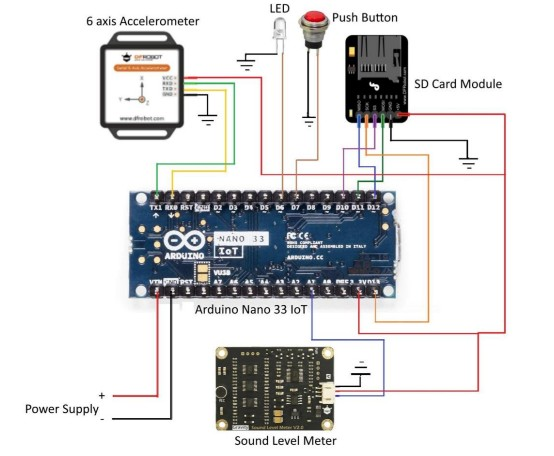
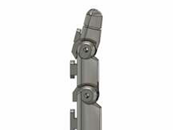
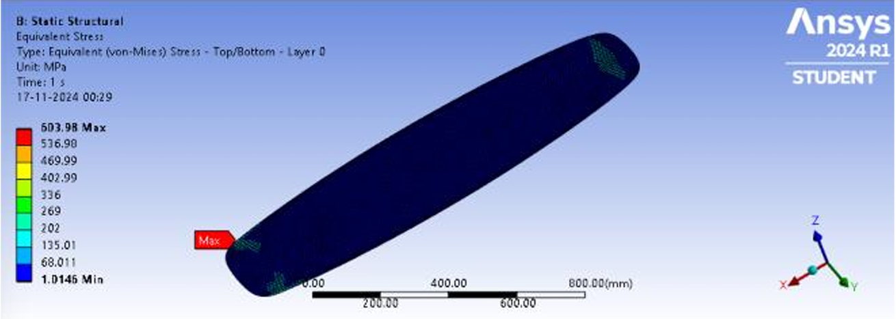
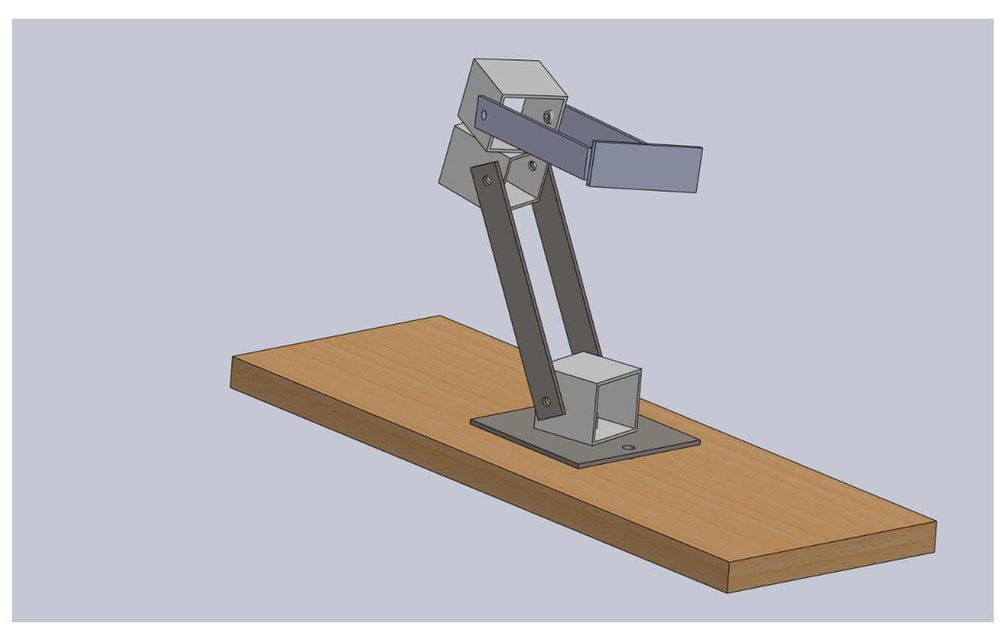
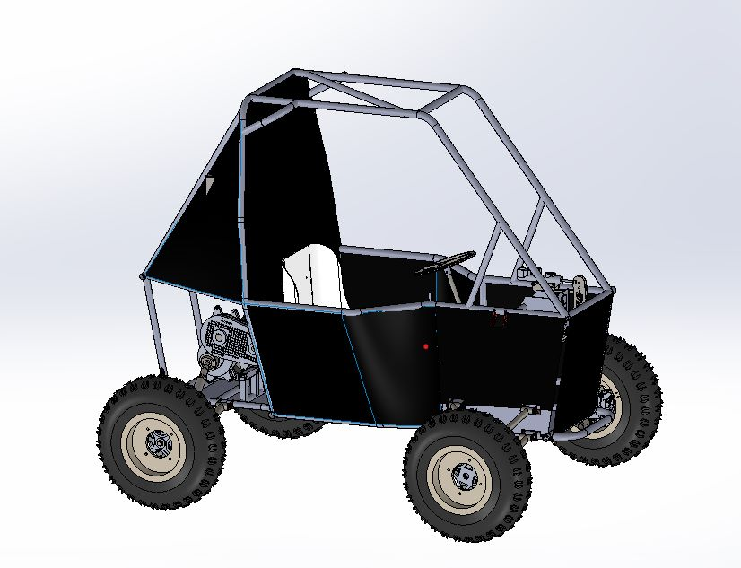

I'm a mechatronics and robotics engineer focused on designing and manufacturing robotic systems, combining mechanical design, automation, and embedded intelligence.
Download Resume →
Grishma Balgi is a graduate student in Mechatronics and Robotics at New York University.
She completed her undergraduate studies in Mechanical Engineering with Honors in Automobile
Engineering at Veermata Jijabai Technological Institute (VJTI), Mumbai, where she developed a
strong foundation in mechanical systems, robotics, and engineering design.
During her academic journey, Grishma worked on a range of projects involving robotics,
embedded systems, and vehicle-related engineering. These experiences allowed her to explore
how mechanical components, sensors, and control logic interact within physical systems.
As part of her final-year work, she contributed to a multi-sensor fault detection project that
combined hardware experimentation with data-driven analysis for industrial applications.
She also gained industry exposure as a Machine Learning Research Intern at Schneider
Electric, where she worked on sensor-integrated hardware prototypes and digital twin–based systems
for monitoring and fault detection. This experience helped her understand how engineering concepts
are applied in real-world industrial environments, particularly in the context of reliability and
system performance.
Grishma’s academic interests include robotics, mechatronic systems, mechanical design, and control
systems. Outside of coursework and projects, she enjoys learning through hands-on experimentation and
building practical engineering solutions.
MSc Mechatronics & Robotics — NYU (2025–Present)
B.Tech Mechanical Engineering — VJTI (2021–2025)

Multi-Sensor Fault Detection System
Designed and implemented a digital twin–based fault detection framework for low-voltage circuit breakers using a multi-sensor embedded system. The project focused on detecting mechanical degradation in internal spring mechanisms by analyzing vibration and acoustic signatures captured using a 6-axis accelerometer and an analog sound sensor.
A custom data acquisition system built around an Arduino Nano 33 IoT enabled synchronized multi-modal data logging with both Wi-Fi transmission and onboard microSD backup. Machine learning classifiers including Decision Trees, SVM, XGBoost, and Naive Bayes were trained to identify fault severity levels with high accuracy. A Python-based GUI allowed intuitive interaction with trained models, demonstrating a practical predictive maintenance workflow suitable for industrial deployment.
View Full Technical Report →
Gesture-Controlled Robotic Finger
Developed a vision-based, human-in-the-loop mechatronic system to control a tendon-driven robotic finger in real time. Human finger motion was captured using a monocular camera and processed via MediaPipe to generate reference commands for actuation.
The robotic finger was modeled as a single-input single-output electromechanical system and controlled using a discretized PD controller implemented on an embedded platform. Encoder feedback enabled closed-loop position control, while MATLAB/Simulink simulations were used to validate stability and performance prior to hardware deployment. The project emphasized full-stack integration across perception, control, embedded firmware, and mechanical actuation.
View Project Report →
Composite Structure Analysis (Kiteboard)
Conducted a detailed finite element analysis of a composite sandwich-structured kiteboard using ANSYS ACP to evaluate structural performance under realistic loading conditions. The study focused on optimizing ply orientation, stacking sequence, and material selection to balance stiffness, strength, and weight.
Carbon-epoxy laminates with a polyurethane core were modeled to replicate real-world composite behavior. Boundary conditions and meshing strategies were chosen to capture deformation and stress distribution accurately. This project strengthened understanding of composite design tradeoffs and simulation-driven decision-making for lightweight, performance-critical structures.
View Research Paper →
Mechanical Manufacturing & Assembly Project
Designed and fabricated a mechanically actuated assembly involving multiple machined components, linkages, and structural elements. The project emphasized hands-on manufacturing processes including cutting, drilling, grinding, welding, and dimensional tolerancing.
Individual components were modeled, manufactured, and assembled into a functional system, highlighting real-world considerations such as alignment, fastening, structural rigidity, and manufacturability. This work reinforced practical understanding of translating CAD designs into physical hardware and resolving fitment and assembly challenges.
View Manufacturing Report →
All-Terrain Vehicle
Ongoing vehicle-scale project focused on mechanical system architecture, subsystem integration, and durability considerations for off-road operation. The work emphasizes translating mechanical design concepts into robust hardware capable of operating under vibration, load variation, and environmental constraints.
Current efforts include structural layout, component packaging, and early-stage design decisions informed by manufacturability and serviceability. This project reflects a growing interest in applied vehicle engineering and full-system integration.
Images
Open to conversations around applied robotics, mechanical design, and real-world hardware systems.
Feel free to reach out via email or LinkedIn.
grishmabalgi1311@gmail.com
LinkedIn